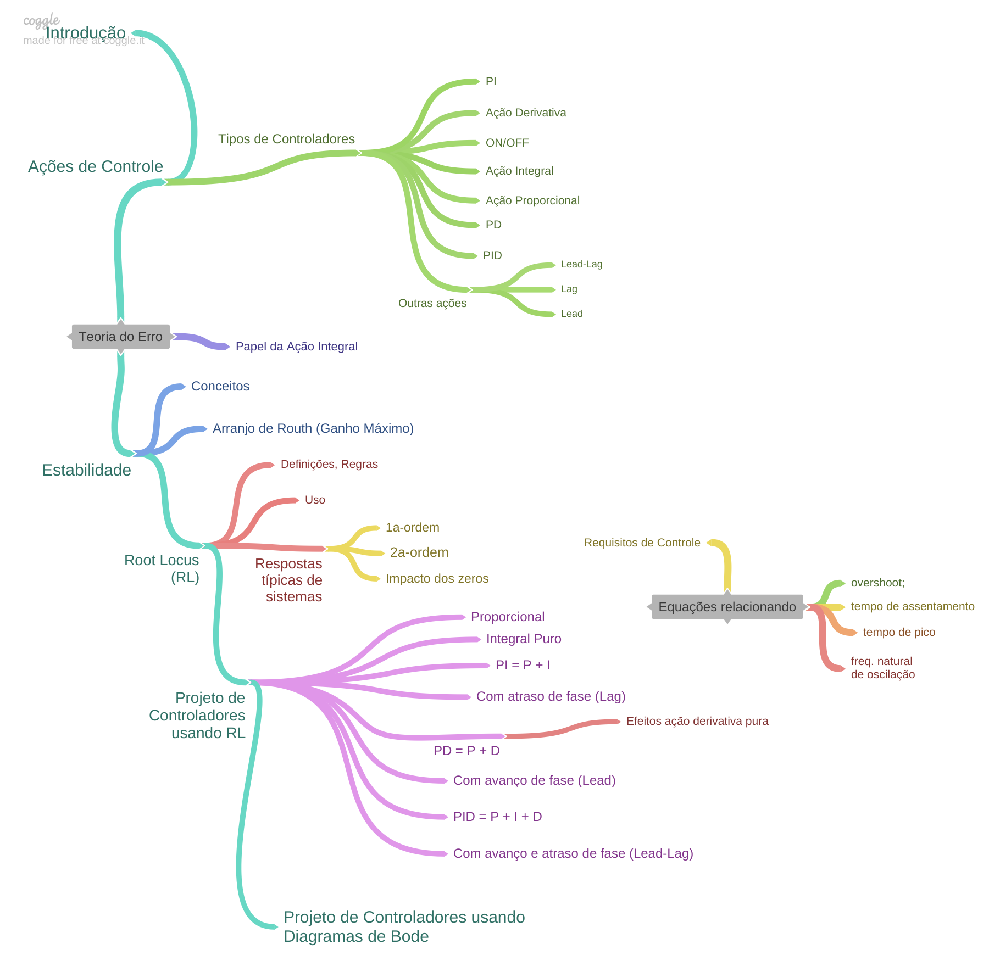

Photo by David Watkis on https://unsplash.com/images/feelings/cool?
Curso de Controle Automático II
Clique neste item para ver Sequência prevista para aulas

Clique neste item para ver Referências Bibliográficas
- NISE, Norman S. Engenharia de sistemas de controle. 7. ed. Rio de Janeiro: LTC, 2017. xiv, 751 p. ISBN 9788521634355. Número de chamada: 681.5 N724e 7.ed.-2017.
- NISE, Norman S. Engenharia de sistemas de controle. 7. Rio de Janeiro LTC 2017, [Acesso online (via UPF); ISBN 9788521634379; Acervo BU/UPF: 5014181]
1) Introdução
História da Área de Controle Automático (clássico) → intro_controle_2.pdf;
Artigo da Scientific American sobre as origens do Controle por realimentação (artigo em inglês, de Out/1970);
Artigo IEEE Control Systems Magazine sobre a história da área de Controle Automático (artigo em inglês, de Abril/2002);
2) Ações de Controle
Ações de Controle (teoria/slides) → acoes_controle.pdf;
Material complementar sobre Açôes de Controle Básicas → acoes_controle_basicas.pdf;
Exemplo de Controle de Velocidade de motor CC (diferentes controladores), incluindo sua modelagem.
Arquivos SLX para Simulações de ações de controle de velocidade do motor CC (para uso com Matlab/Simulink) + imagens e HTML em formato Zipado (Motor_CC.zip, 5 MB -- Detalhes/Instruções de Uso.
3) Teoria do Erro
Teoria do erro (ou da Precisão): slides → erros.pdf;
Exemplos de sistemas à serem simulados (Matlab/Simulink: arquivos disponibilizados);
Avaliação quanto à Teoria do Erro: Google Forms: Avaliação Teoria do Erro
4) Estabilidade
Slides/teoria → Estabilidade.pdf;
Parte 1 (Conceitos e simulações)
Parte 2 (Incompleto)Vídeos (YouTube) Recomendados:
Critério de Estabilidade de Routh (ELT009, ELT035) - Prof. Aguirre (UFMG);
Teste de Routh - Quarto grau - Parte 1 - Eng. Cleiton Vanz.
Teste de Routh - Quarto grau - Parte 2 - Eng. Cleiton Vanz.
Avaliação: Google Forms: Avaliação Estabilidade
5) Root Locus
Introdução sobre Root Locus → intro_root_locus.pdf
Rotina
intro_rlocus.m(aprendendo root-locus);
Regras e exemplos sobre traçados de RLs → Root_Locus_2a_parte_pt.pdf;
Resumo sobre Root Locus → root_locus_resumo.pdf;
Vídeo (YouTube) recomendado: Root Locus (ELT009, ELT013, ELT035) - Prof. Luis Antonio Aguirre (UFMG) + Adendo sobre Álgebra de Diagrama de Blocos deste professor
Vídeos (YouTube) recomendados sobre Álgebra de Diagrama de Blocos do Prof. Cleiton Vaz: Simplificações - parte 1 e Simplificações - parte 2.
6) Respostas de Sistemas Lineares
Revisão sobre Respostas de Sistemas Lineares (plantas de 1a-ordem, um polo simples real, múltiplos polos reais, polos dominantes, sistemas 2a-ordem com polos reais e polos complexos): → Root_Locus_3a_parte_pt_2019_1.pdf
7) Projeto de Controladores usando Root Locus
Projeto de Controladores usando Root Locus → Controlador Proporcional, metodologia de projeto usando ferramenta Root Locus (parte inicial introdutória).
Iniciando com Projeto de Controlador Proporcional (P) (aula de 10/10/2022; inclui cálculo de
Melhorias em Controlador Proporcional !? - considerando o valor máximo de
Projeto de Controlador P, Controlador I (puro) e Controlador PI (Aula de 13/05/2020).
Projeto de Controladores com Ação Integral:
Projeto de Controladores com Ação Integral: Controladores I, PI, PI usando Contribuição Angular (Aula de 17/10/2022);
Projeto de PI usando contribuição angular + Controlador Lag; (Aula de 30/10/2020);
Exemplo
Exemplo
Exemplo
Exemplo
Observações quanto à cálculos de contribuição angular.
Script: find_polo_zero.m (automatização para cálculos do pólo ou zero de um controlador usando contribui~çao angular).
Controladores com Ação Derivativa:
Ação Derivativa Pura!? (Derivador Puro? Simulações, cuidados e atenção).
Ação Derivativa com sinal ruidoso (Requer conhecimentos de Diagramas de Bode; Aula de 11/11/2022).
Resumo teoria à respeito de Controladores PD e Lead (por Avanço de Fase) (Aula de 02/06/2021)
Projeto de PD (Projeto usando Contribuição angular e script find_polo_zero.m (Aula de 03/10/2019).
Exemplo
Exemplo
Exemplo
Projeto de PID (baseado no example_9_5 de NISE, Norman S. Control Systems Engineering).
Projeto de Lead-Lag (Aula de 28/05/2019)
Outros exemplos de projetos de controladores usando RL (exercícios aleatórios).
Sintonia de PID: Método Prático usando Ziegler-Nichols e Método do Relé.
8) Projeto de Controladores no Domínio Frequência
Teoria inicial/slides (arquivos PDF):
Parte 1: Revisão Diagramas de Bode + Conceitos Área Controle;
Parte 2: Revisão Margem de Ganho (
Projeto de Controlador Proporcional (Ajuste de Ganho) (atualizado em 04/11/2024);
Projeto de Controlador por Atraso de Fase (Lag);
Exemplo de Projeto de Lag com planta do "estudo de caso" ( aula de 11/11/2024 ).
Projeto de Controlador por Avanço de Fase (Lead);
Exemplo de Projeto de Lead com planta do "estudo de caso" ( aula de 18/11/2024 ).
Projeto de Compensador Lead-Lag → Teoria + Resumo (arquivos PDF).
Aula de 25/11/2024.
Material de Apoio:
Vídeos (YouTube) recomendados do Prof. Luis Antonio Aguirre (UFMG):
Videos (em inglês) do Prof. Brian Douglas:
"Engineering Media" → Site do Prof. Brian Douglas (desde 2018)
9) Sintonia (prática) de PIDs
Sintonia de PID (usando Ziegler-Nichols e Método do Relé)
Arquivo exemplo →
sintonia_PID_exemplo.slx(Matlab/Simulink)
Aulas
Trabalhos
FAQs
Dúvida em Projeto de PI usando Root Locus e Contribuição Angular...
Dúvida associada com posição do zero do controlador, o qual achamos por contribuição angular. No arquivo, há dois tipos de tentativa: a primeira seguindo à risca o que estava no material do senhor quanto ao processo de achar o local do zero, e a segunda mudando a equação das somatórias dos polos e zeros, como o senhor poderá ver no arquivo.Gostaríamos de saber como podemos proceder nesse caso, e se ele se encaixa na observação feita pelo senhor no material sobre amplitudes excessivas para a ação de controle.
Segue [Aquivo PDF Dúvidas Controlador PI], com a dúvida, acrescido de comentários no próprio PDF.
Dúvidas Projeto de PD e cálculo do seu zero usando contribuição angular...
Segue: [PDF com FAQ/observações & cuidados associados com cálculos de contribuicao angular]
Dúvidas Projeto de PD e cálculo do seu zero usando contribuição angular...
[PDF]: Dúvida sobre PD e Lead (simulações com Bloco Saturador)
💬 Anexos
Como obter gráficos de
Uso do MATLAB nas aulas de Controle + documentação Markdown;
🎵 Prof. Fernando Passold
🌊 Fernando Passold 📬 ,